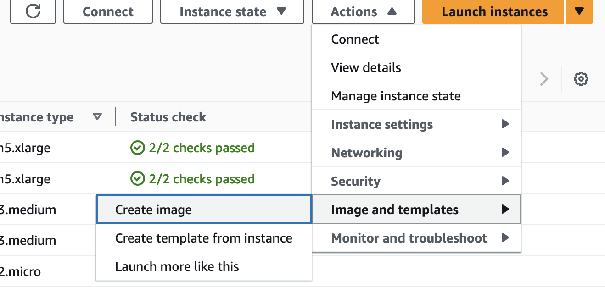
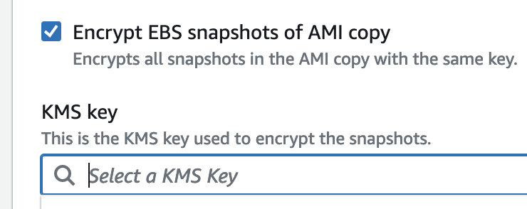

Copy Amazon Machine Images (AMI) to another account using AWS Key Management Service (KMS)
Create an Image for the VM you want to copy
- Select your vm.
- Click on Actions -> Image and templates -> Create Image. 
Create an KMS key to the account
-
Go to the account where the AMI will be copied.
-
Go to Key Management Service (KMS)
-
Click on Create A key.
-
Skip all the steps and go directly to Review.
-
Copy and paste the following policy in the Key Policy section.
{ "Version": "2012-10-17", "Id": "key-consolepolicy-3", "Statement": [ { "Sid": "Enable IAM User Permissions", "Effect": "Allow", "Principal": { "AWS": "arn:aws:iam::ACCOUNT_ID:root" }, "Action": "kms:*", "Resource": "*" }, { "Sid": "Allow access for Key Administrators", "Effect": "Allow", "Principal": { "AWS": "arn:aws:iam::ACCOUNT_ID:root" }, "Action": [ "kms:Create*", "kms:Describe*", "kms:Enable*", "kms:List*", "kms:Put*", "kms:Update*", "kms:Revoke*", "kms:Disable*", "kms:Get*", "kms:Delete*", "kms:TagResource", "kms:UntagResource", "kms:ScheduleKeyDeletion", "kms:CancelKeyDeletion", "kms:RotateKeyOnDemand" ], "Resource": "*" }, { "Sid": "Allow use of the KMS key for organization", "Effect": "Allow", "Principal": { "AWS": "*" }, "Action": [ "kms:Encrypt", "kms:Decrypt", "kms:ReEncrypt*", "kms:GenerateDataKey*", "kms:DescribeKey", "kms:GetKeyPolicy", "kms:ListKeys", "kms:ListAliases", "kms:CreateGrant" ], "Resource": "*" }, { "Sid": "Allow attachment of persistent resources", "Effect": "Allow", "Principal": { "AWS": "AWS": "arn:aws:iam::ACCOUNT_ID:role/KMSKeyAdmins" }, "Action": [ "kms:CreateGrant", "kms:ListGrants", "kms:RevokeGrant" ], "Resource": "*", "Condition": { "Bool": { "kms:GrantIsForAWSResource": "true" } } } ] }Replace Account_ID with your account id.
For info here
Encrypting EBS Snapshots of AMI Copy
- Copy the ARN of the newly created KMS.
- Go back to the account the the AMI is located.
- Select the AMI -> Actions -> Copy AMI.
- Select the Encrypt EBS Snapshots of AMI Copy\
- Add the ARN that you copied from the previous account and paste it here.
- Click on Copy AMI below

Copy the AMI to another account.
- Click on the AMI.
- Select Actions -> Edit AMI permissions.
- Under Shared accounts, click on Add account ID.
- Add the account ID to which the AMI will be copied.
Final Check
Navigate to the account, and check if the ami has been copied.